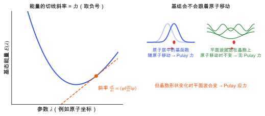

Hellmann–Feynman 定理：力与应力
为什么 DFT 一次计算就能给出所有原子上的力和应力，什么时候要加 Pulay 修正。
直观阅读需要
- 能量对参数求导
- 变分原理：基态能量的稳定性
完整推导还需要
只是提示，不需要先读完才能往下看。
直觉直观解释
要算原子上的力，最直接的做法是把每个原子沿每个方向挪一点，看能量怎么变。N 个原子要算 6N 次，太贵了。
Hellmann–Feynman 定理说：如果波函数是哈密顿量的精确本征态，那么能量对任意参数的导数，等于哈密顿量对该参数的导数的期望值。波函数本身怎么变不需要知道。原因是基态能量对波函数是变分稳定的：波函数的一阶变化不改变能量（见 变分原理）。
所以一次 SCF 计算之后，就能直接算出所有原子上的力和晶胞应力。这是结构优化和分子动力学能够负担得起的原因。
但有一个条件：如果基函数本身随参数移动（例如以原子为中心的高斯基组），波函数的变化就不完全在基组能描述的空间里，需要加一个修正项，叫 Pulay 力 [Pulay 1969]。

| 符号 | 是什么 | 图里对应 |
|---|---|---|
| \lambda | 哈密顿量中的参数（原子坐标、应变等） | 左图横轴 |
| E(\lambda) | 基态能量 | 左图蓝色曲线 |
| \langle\partial H/\partial\lambda\rangle | Hellmann–Feynman 导数 | 左图橙色切线的斜率 |
| 高斯基函数 | 以原子为中心的基函数 | 右上图随原子移动的包络 |
| 平面波 | 不依赖原子位置的基函数 | 右下图固定的波 |
定义与公式数学与推导
证明思路：对 E = \langle\psi|H|\psi\rangle 求导，得到三项。含 \partial\psi/\partial\lambda 的两项合起来是 E\,\frac{\mathrm{d}}{\mathrm{d}\lambda}\langle\psi|\psi\rangle = 0，只剩中间一项。
原子上的力
取 \lambda 为原子 I 的坐标 \mathbf{R}_I。在 Born–Oppenheimer 近似下（见 多电子问题与 Born–Oppenheimer 近似），哈密顿量中只有电子–核吸引和核–核排斥显含 \mathbf{R}_I：
其中 n 是电子密度，v_{\mathrm{ext}} 是原子核（或赝势）产生的外势，E_{\mathrm{II}} 是核–核排斥能。在 Kohn–Sham DFT 中同样成立，前提是 KS 方程已经自洽求解。
应力
把参数取为应变 \varepsilon_{\alpha\beta}，可以用同样思路导出应力，称为应力定理 [Nielsen & Martin 1985]：
其中 \Omega 是晶胞体积。应变会改变倒格矢，因此在固定截断能下改变平面波基组，于是平面波计算中应力有 Pulay 项（Pulay 应力），力却没有（见 平面波基组与截断能）。符号约定（张应力为正还是负）不同程序不一致。
在本研究线里的样子对应与边界
- 结构优化
IBRION=1/2：每个离子步用 Hellmann–Feynman 力和应力更新坐标与晶胞（ISIF=3）。 - 有限差分 Born 电荷和力常数：把原子挪一点，用力的变化算导数（见 介电张量与玻恩有效电荷 与 声子与晶格动力学）。力的精度直接决定这些量的精度。
- MLIP 训练标签：MACE 训练集里的力和应力就是 DFT 的 Hellmann–Feynman 力和应力（见 机器学习势）。标签噪声来自 SCF 未充分收敛和 Pulay 应力。
常见坑对应与边界
- SCF 没收敛就用力：定理的前提是精确本征态。能量对密度误差是二阶的，力却是一阶的，所以力比能量对
EDIFF更敏感（见 自洽场循环与密度混合）。 - 混淆力和应力的收敛：截断能对力影响小，对应力影响大。
- 用能量差分验证力时步长太大：差分步长要小到二阶项可以忽略，又要大于 SCF 噪声。
检验自己对应与边界
参考资料
论文Feynman 1939
R. P. Feynman, Forces in molecules, Phys. Rev. 56, 340 (1939)
尚未实际查阅，目前只是拟查阅书目
论文Pulay 1969
尚未实际查阅，目前只是拟查阅书目
论文Nielsen & Martin 1985
尚未实际查阅，目前只是拟查阅书目
论文Payne et al. 1992
尚未实际查阅，目前只是拟查阅书目
分类量子力学 · 概念 · 状态：草稿